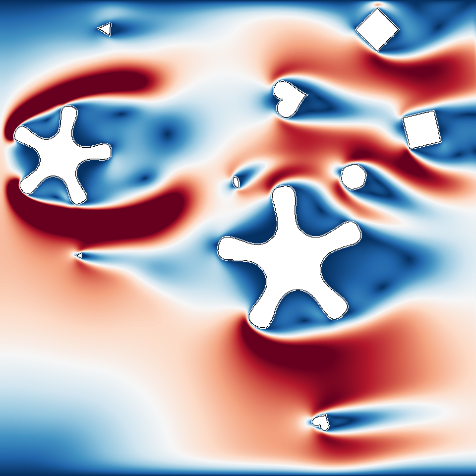
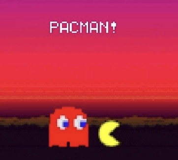

About Me
I'm Nox Zeng, an undergraduate Computer Science student at Georgia Tech, pursuing the Intelligence and Media thread. I enjoy exploring the connections between computing, design, and communication, and I’m always eager to learn and build along the way.
Skills
Languages
- Java
- Python
- JavaScript
- TypeScript
- C
- C++
- C#
- MATLAB
- SQL
- HTML
- CSS
Frameworks & Tools
- React
- Vue 3 (with Vite)
- Node.js
- NestJS
- PostgreSQL
- Firebase
- MongoDB Atlas
- Docker
- Redis
- TensorFlow
- PyTorch
- Git
- CesiumJS
- Leaflet.js
- Chart.js
- MPAndroidChart
- Tailwind CSS
Design Patterns
- MVVM Architecture
- Factory Pattern
- Singleton Pattern
- Observer Pattern
- Decorator Pattern
- Memento Pattern
Dev & Collaboration
- Git & GitHub
- VSCode & Terminal
- Agile Collaboration & Feature Development
Projects
HealthTracker
HealthTracker is a personal wellness app designed to help users monitor calories, log workouts, and join community challenges. With a clean UI and role-based features, it empowers individuals to set and achieve their fitness goals while fostering a sense of progress and accountability.
ATLSFW App
A mobile app that connects users with sustainable fashion by showcasing upcoming events, curated articles, and local ethical brands. Includes user roles for admins and vendors, enabling dynamic content creation and community interaction.
LBM
Extends a 2D LBM fluid solver with randomized obstacle generation and new shapes. Enables diverse simulation outputs for machine learning training using timestamped .npz files. Built for generalization testing and Lat-Net compatibility.
NASA Explorer
A space-themed data visualization dashboard using NASA APIs. Built with Vue 3, Vite, TypeScript, and Tailwind CSS, it features real-time 2D/3D ISS tracking (Leaflet & Cesium), APOD image viewer, asteroid statistics with Chart.js, and responsive UI.
Pacman GBA
Custom Pacman game for GBA using low-level DMA and sprite engine. Built from scratch in C, with animation, idle timer, real-time UI, and Super Mario Bros theme music on the start screen.
Contact Me

“Code calculates, but meaning — like light on leaves — is something we bring.”